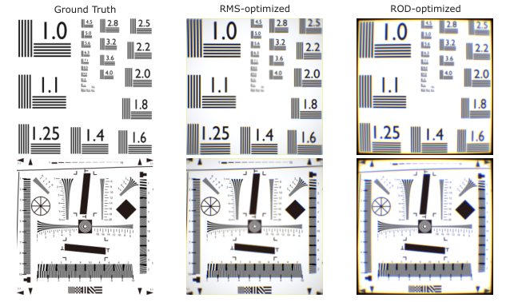
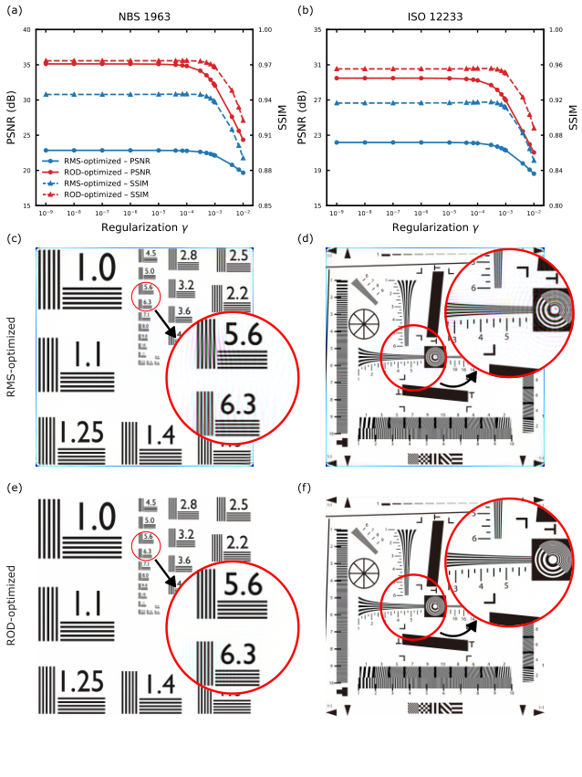
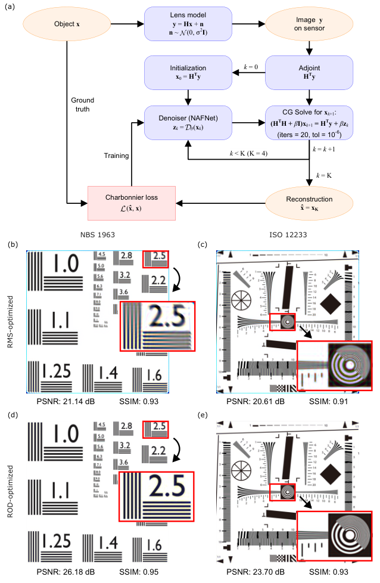

基于Fisher信息量的恢复导向光学系统设计
传统上，面向成像应用的光学系统设计一直以几何RMS弥散斑尺寸、波前误差和调制传递函数（MTF）等图像质量指标为指导。尽管这些指标能有效表征直接成像性能，但当随后应用图像恢复时，它们并不一定表明系统具有最优表现。然而，在现代成像流程中，光学系统越来越多地与基于物理或基于学习的恢复方法相结合，使得光学系统的信息传递特性变得至关重要。在本工作中，我们提出一种恢复导向的光学设计方法，通过基于Fisher信息的估计理论框架，将光学系统优化与图像恢复性能明确关联起来。采用一种新的设计准则，以确保光学系统所编码的信息能够在图像恢复过程中被可靠地恢复。为验证所提方法，分别使用传统的基于RMS的优化和所提出的恢复导向优化，在相同配置下设计了两个双分离非球面透镜。尽管RMS优化的透镜具有更优的直接成像质量，但在图像恢复后，其表现不如恢复导向设计。这些结果表明，对于在现代计算成像流程中运行的成像系统，恢复导向光学设计为传统光学设计准则提供了一种具有物理可解释性且有效的扩展。
1 引言
传统上，成像光学系统的设计一直以几何图像质量指标为中心，例如均方根（RMS）弥散斑尺寸、波前误差和调制传递函数（MTF）[1, 2, 3, 4, 5]。这些指标提供了直观的物理解释，并已被证明在指导面向直接成像的光学系统开发方面非常有效。对于最终图像直接在传感器上获得的应用，最小化几何像差仍然是一种稳健且成熟的设计策略[6, 7, 8, 9, 10, 11, 12, 13, 14]。
然而，在许多现代成像系统中，传感器捕获的光学图像仅是中间状态，而非最终输出[15, 16]。相反，它通常要经过数字恢复——例如去卷积、逆滤波或基于学习的增强——以减轻光学模糊和噪声。因此，光学图像形成与后续计算处理越来越被视为一个耦合系统，其中光学设计的具体像差决定了计算恢复的极限。在此背景下，光学设计的目标从获得即时视觉锐度转变为优化信息容量及其在空间模式上的分布，以用于后续重建。
这一观察凸显了传统基于 RMS 的光学设计在与图像恢复流程集成时的一个根本局限。尽管 RMS 光斑尺寸能够有效反映来自单个物点的光线的空间集中程度，因而非常适合评估直接成像锐度，但它无法表征来自扩展物体特征的信息如何分布或组织以用于计算恢复[17]。因此，仅针对几何锐度优化的光学系统可能会无意中成为信息瓶颈，在完整成像流程中表现不佳。
与此同时，在计算阶段提升图像恢复性能方面已取得显著进展。先进的基于物理和基于学习的重建方法已展现出卓越能力，可减轻光学模糊和噪声。这为端到端设计策略[18, 19, 20, 21, 22]铺平了道路，其中光学参数和重建网络被联合优化。通过利用训练数据最大化特定任务性能，这些方法将光学前端和数字后端视为真正统一、耦合的系统。
然而，端到端设计策略往往固有地依赖于特定的训练数据集和重建架构，这可能会使所得光学配置产生偏差。这种数据驱动的耦合常常会掩盖光学系统的物理解释，并引发关于泛化性和鲁棒性的担忧，尤其是当工作条件偏离训练域时。这些挑战凸显了以下必要性：光学设计目标应明确纳入计算成像需求，同时保持独立于特定重建算法或物体分布。这引出了一个根本问题：当成像不再是最终阶段，而是计算成像流程的第一步时，应如何设计光学系统？
估计理论为解答这一问题提供了天然框架[17, 23, 24, 25, 26]。具体而言，Fisher 信息量化了物体特征在成像过程中被编码的有效程度，并通过 Cramér–Rao 界确立了重建精度的基本极限。这一视角表明，光学设计目标可以基于信息编码效率来构建，而非纯粹基于几何图像锐度。受此启发，我们提出一种面向恢复的光学设计方法，用于重建感知成像。所提方法不是最小化传统像差，而是优化光学系统以提高反演稳定性，确保捕获的信息保持可靠可恢复。这是通过由 Fisher 信息矩阵导出的设计准则实现的。至关重要的是，所提方法不依赖于物体统计特性和训练数据，提供了经典设计的物理解释性扩展，并与多种重建技术兼容。
2 成像模型与估计理论背景
2.1 成像模型
在本文中，我们研究通过复原算法重建传感器测量的光学成像系统。为了表征光学设计与重建性能之间的关系，我们采用基于矩阵的线性算子模型。该框架有助于对小信号条件下的非相干成像系统进行基于Fisher信息的分析。
为此，我们将物平面离散为有限空间单元，并将传感器数据表示为向量。该表述将图像形成过程视为物体与传感器测量之间的线性映射，这是计算成像和估计理论中常用的数学框架。虽然该矩阵表示本质上与传统的点扩散函数（PSF）卷积模型相联系，但它为建模一般光学系统（包括具有空变PSF的系统）以及评估存在噪声时的重建性能提供了通用框架。
令 和 分别表示离散化物体强度分布和相应的传感器测量。通过将这些分布表示为列向量，图像形成过程可表述为
| (1) |
其中 表示由光学系统响应确定的成像算子， 表示测量噪声。在该框架中，算子 囊括了所有光学效应，从离焦到引起模糊和畸变的像差；同时，噪声项考虑了传感器噪声以及其他随机扰动。这种线性表示可作为研究图像复原的通用抽象。无论是采用基于物理的反演还是基于学习的方法，可达到的重建保真度从根本上由成像算子 的频谱特性决定。
2.2 Fisher信息与估计理论界
我们采用估计理论来表征光学设计与重建性能之间的关系。假设协方差为 的加性白高斯噪声，与 估计相关的Fisher信息矩阵定义为
| (2) |
Fisher信息矩阵量化物体扰动与传感器数据之间的映射灵敏度，为特征估计的可靠性提供了严格的度量。
估计理论的一个基本结果是Cramér–Rao界（CRB），它规定了 的任意无偏估计量的协方差下界。然而在实践中，物理光学系统中的成像算子往往病态，使得 的直接反演在数值上不稳定。为缓解这一问题，通常采用正则化表述，该表述在漫射各向同性先验下可解释为贝叶斯Cramér–Rao界（BCRB）。相应的界正比于
| (3) |
其中 是确保数值稳定性的正则化参数。
2.3 迹逆设计准则
基于这些考虑，我们采用由 Fisher 信息矩阵导出的逆迹目标作为重建感知的光学设计准则。具体而言，我们的目标是最小化
| (4) |
这对应于正则化框架内所有物体自由度的总估计方差。通过最小化该总和，我们有效抑制反演过程中的误差放大，从而即使在噪声受限情况下也能确保稳健且高保真的恢复。为方便起见，在本文后续内容中，我们将这一估计理论准则称为面向恢复的设计（ROD）目标。
与关注局部图像锐度的几何指标不同，逆迹准则显式惩罚成像算子的弱可观测模式，从而促进空间频谱上的均衡信息传递。因此，它倾向于选择对计算恢复条件更好的光学配置，即使此类设计在传统基准测得的原始成像保真度上略有下降。重要的是，该准则仅由物理系统和噪声统计决定，独立于任何数据驱动的训练。因而，它为现代计算成像系统的传统光学设计目标提供了一种物理可解释且与物体无关的扩展。
3 光学系统设计与优化
本节描述所研究的光学系统以及用于生成 RMS 优化设计和面向恢复设计的优化流程。为确保严谨且无偏的比较，两种设计采用相同的光学配置、共享相同的自由度，并受相同设计约束，仅在其各自的优化目标上有所不同。
3.1 光学配置
本研究采用的评估系统是一个双元件分离式非球面透镜。该光学配置被选为具有代表性但非平凡的基线，既提供足够的设计自由度，又保持计算可处理性。所有光学表面均为旋转对称偶次非球面；值得注意的是，未引入衍射孔径或编码孔径。
为隔离优化目标的影响，两种设计均受相同的系统规格和约束，包括焦距、F 数、视场角和传感器规格。主要设计参数总结于表 1 中。
0.9¿\arraybackslashX ¿\arraybackslashX
参数 规格
焦距 (mm) 50
视场角 (∘) 38.8
F 数 2.0
波长 (nm) 486, 588, 656
传感器尺寸 (mm) 24.93 24.93
3.2 优化目标
本小节描述为实现 RMS 优化和 ROD 光学系统所采用的优化目标与数值流程。虽然两种设计在相同的系统约束和设计自由度下进行优化，但它们在各自目标函数的形式上存在根本差异。为确保严格且无偏的比较，两种设计过程中保持一致的校正项和优化设置。
3.2.1 基于 RMS 的光学设计目标
对于 RMS 优化设计，评价函数是在多个视场点上评估的 RMS 弥散斑半径。在每个视场，对覆盖指定光谱范围的光线进行追迹，并相对于近轴像坐标（或主光线交点）计算 RMS 弥散斑半径，如下所示：
| (5) |
其中 表示第 条光线在像平面上的交点坐标， 表示近轴光学针对相应视场预测的理想像坐标， 是在该视场下所有追迹波长中追迹的光线总数。
除 RMS 弥散斑指标外，还引入若干正则化项以确保可制造性与系统可行性。这些项对中心厚度和边缘厚度以及其他几何约束施加惩罚，以排除物理上不可实现的解。因此，基于 RMS 的总评价函数被构造为所有采样视场点上的平均 RMS 弥散斑半径与正则化项的加权和：
| (6) |
在式 (6) 中， 表示光学设计参数向量，包括面形轮廓系数和元件间距。集合 表示采样视场点，而第二项包含一组正则化惩罚 ，每一项由相应的权重 缩放。
3.2.2 成像算子的构建与 ROD 目标
在面向恢复的设计框架中，光学系统使用由成像算子 导出的估计理论目标进行优化，如第 2 节所介绍。算子 表征离散化物体与传感器测量之间的线性映射，并通过光线追迹数值构建。
为计算 ，首先将物平面离散为一组有限的空间基元。对于每个基元，发射一束光线，其方向在入瞳上均匀采样，确保每条光线代表光通量的等效份额。将这些光线通过光学系统追迹后，记录它们与传感器平面的交点。然后，使用基于插值的加权核将每条光线对离散传感器像素的贡献累加，从而形成成像算子 的一列。对所有物元重复此过程，即可得到完整的系统矩阵。
对于多色成像，该表征针对表 1 中指定的每个波长独立执行。具体而言，针对三条主谱线 、、，我们构建三个波长相关的成像算子 、、。在传感器侧，与每个波长对应的响应被视为不同的光谱通道。随后，对每个波长通道分别评估迹逆指标，并将复合目标定义为三个波长通道上的算术平均。
利用这些构建的成像算子，ROD 目标函数基于由正则化 Fisher 信息矩阵导出的迹逆准则进行构造。具体而言，优化旨在最小化
| (7) |
其中 是缩放因子，经校准以确保主目标项在量级上与式 (6) 中的对应项相当，而 是为确保数值稳定性而引入的正则化参数。在我们的实验中，我们相对于 中的归一化强度尺度设置 。正则化惩罚与式 (6) 中的相同，从而确保基于 RMS 和基于 ROD 的框架均受到相同的几何与可制造性约束。如第2节所讨论，该准则力求最小化所有物体自由度上的总估计方差，从而促进稳定且良态的反演。
由于式 (7) 中的直接矩阵求逆对于大规模系统在计算上难以承受，迹逆项通过随机 Lanczos 方法进行高效近似，从而无需显式矩阵求逆即可对迹进行可扩展估计。
3.2.3 可微光线追迹与优化策略
为处理 RMS 评估和成像算子构建所需的大量光线，整个流水线在 GPU 加速环境中实现。光线追迹、传感器响应累积和优化目标评估均在光线级别并行化，显著降低了计算成本并促进大规模优化。鉴于设计空间维度可处理且目标函数具有平滑性，采用有限内存 Broyden–Fletcher–Goldfarb–Shanno (L-BFGS) 算法，确保快速收敛并在两个框架中采用一致的优化策略。
3.3 优化结果
为了在严格受控条件下评估不同优化目标的影响，采用两种不同的评价函数对同一初始光学配置进行优化：传统的基于RMS的目标函数和所提出的ROD目标函数。两种优化流程均从相同的准平面配置出发，其中各表面曲率半径初始设定为较大值。这确保了中性基线，避免通过强先验像差对波前进行预整形。
设计变量包括所有四个折射面的曲率半径、每个表面面型的偶次非球面系数（2阶至14阶），以及所有轴向尺寸，包括透镜中心厚度、元件之间的空气间隔和后焦距。因此，两种优化流程在具有相同自由度的同一设计空间中进行探索。
在整个过程中，使用第3.2节详述的共享惩罚项统一施加严格的几何与可制造性约束。收敛后，基于RMS和基于ROD的系统的惩罚值均为零，确认两种解均严格满足规定的物理边界。
图1展示了初始配置以及使用两种优化目标获得的最终设计的光学布局。尽管共享相同的系统规格和约束，所得几何结构仍存在差异，这种结构差异完全源于主评价函数的选择。为评估原始成像性能，为 0、0.4、0.7 和 1 四个代表性归一化视场点生成弥散斑图。对每个视场，追迹全光谱范围内的光线，并将其像面交点相对于视场质心绘制。
正如预期，基于RMS优化的配置在大多数视场点处获得了显著更小的弥散斑半径，这与其最小化几何弥散斑尺寸的目标一致。相比之下，基于ROD优化的设计体现了优化范式的根本转变：ROD目标不再追求局部锐度，而是优先考虑成像算子的数值条件，以促进稳健的信息传递。这些结构权衡对计算重建保真度的影响将在后续章节中评估。
4 结果与重建感知比较
为比较RMS优化设计与恢复导向光学设计的系统级行为，我们在完整成像流程中评估这两个系统，包括直接光学渲染、基于物理的反演以及基于模型的神经网络复原。本研究使用两个标准分辨率靶标：NBS 1963分辨率测试图，其强调高频线对图案；以及ISO 12233测试图，其包含斜边和混合空间频率结构。这两个靶标提供互补的结构特征，从而能够在不同重建策略下全面评估细线分辨率和边缘保真度。
对于每个光学系统，目标图像首先通过第3节所述的可微射线追踪框架进行渲染，以生成直接传感器图像。随后，这些渲染图像使用两种重建方法处理：线性Tikhonov反演方法和基于模型的神经网络复原框架。重建过程中光学设计保持不变。为模拟真实测量条件，在重建之前向渲染传感器图像引入加性高斯白噪声。噪声标准差设为，相对于范围内的归一化图像强度。该噪声水平在两个光学系统和所有重建实验中保持一致，以确保公平比较。
重建质量采用峰值信噪比（PSNR）和结构相似性指数（SSIM）评估，二者均相对于原始真值图像计算。这些指标既报告直接渲染结果，也报告由两种复原方法获得的重建图像。
4.1 直接成像性能
我们首先比较两个光学系统产生的直接成像结果。图3展示了原始测试图以及由RMS优化设计和恢复导向设计产生的渲染传感器图像。

尽管RMS优化设计在低频和高对比度结构中具有更高的表观锐度，但其在高空间频率细节方面表现出显著退化。高频线对经历更严重的混叠，某些小尺度结构表现出对比度夸张，却未保持正确的几何间隔。这种行为表明某些空间频率分量以降低的稳定性传递，可能限制后续反演性能。
相比之下，ROD 优化系统生成的图像表观锐度有所降低；不过，高频线对在结构上仍可分辨，方向性特征也表现出更好的一致性。在两幅测试图卡上，小字符、细网格和斜边均保持连贯的几何结构，未出现频率过早塌缩。边缘过渡更加单调且稳定，表明其更适合后续反演或复原。ROD 设计并非最大化峰值锐度，而是在空间频率上保持更均衡的费舍尔信息分布，防止某些模式塌缩至接近零的灵敏度。
在几何畸变方面还观察到另一个差异。ROD 优化系统表现出明显更强的畸变，尤其是在图像边缘附近，直线特征相对于真值出现轻微弯曲。这反映了面向恢复的优化准则所引入的固有折衷，其中空间均匀性和畸变未在迹逆目标中被显式约束。因此，该设计优先考虑可逆性和信息保持，而非几何保真度。尽管畸变增大，细小细节的结构完整性仍保持完好，表明即使几何映射更显著地偏离理想投影，所恢复的信息内容仍得到更好的保持。
4.2 通过 Tikhonov 正则化进行重建
为分析线性重建框架下的反演行为，我们对含噪渲染图像应用 Tikhonov 正则化。给定线性成像模型 ，重建图像通过求解以下正则化最小二乘问题获得：
| (8) |
其中 为正则化参数，控制数据保真度与噪声抑制之间的折衷。相应的闭式解为
| (9) |
在我们的实现中，线性系统采用共轭梯度法迭代求解，而不显式构造稠密矩阵。对于每个光学系统， 在多个数量级范围内变化，重建质量使用 PSNR 和 SSIM 量化。每个系统的最优重建由使 PSNR 最大的 值确定。

图 4 同时给出了重建图像和相应的参数敏感性曲线。图的上部展示了 PSNR（左纵轴）和 SSIM（右纵轴）作为 的函数。图的下部展示了使用针对每个光学系统单独优化的 对 NBS 1963 和 ISO 12233 图卡进行重建的结果。
图 4 中子图 (a) 和 (b) 的定量结果表明，在正则化参数 的较大范围内，两种优化策略之间存在一致的性能差距。对于 NBS 1963 和 ISO 12233 数据集，在大多数测试参数范围内，ROD 优化系统（红色曲线）的 PSNR 和 SSIM 值均高于 RMS 优化系统（蓝色曲线）。虽然两种系统在 较小时都表现出特征性的平台区，随后在正则化过强时（约高于 ）出现性能下降，但 ROD 优化曲线始终系统地高于基于 RMS 的设计曲线。这种稳健的性能表现表明，ROD 目标有效地最小化了成像算子 的条件数，从而增强了结构保持能力，并提高了正则化反演下的稳健性。因此，该系统在较宽的正则化强度范围内更适于反卷积。
重建图像进一步印证了这些定量观察结果。对于子图 (c) 和 (e) 所示的 NBS 1963 测试图，RMS 优化重建 (c) 在 “5.6” 和 “6.3” 线组周围的放大区域出现明显的振铃和颜色伪影。高对比度边缘表现出振荡行为和局部对比度不稳定，表明其对反演引起的误差放大更敏感。相比之下，ROD 优化重建 (e) 对伪影具有更优的抑制效果，且相邻线对之间的分离更稳定。边界在几何上显得更一致，虚假振荡明显减轻。
在子图 (d) 和 (f) 所示的 ISO 12233 结果中也观察到类似趋势。RMS 优化重建 (d) 在西门子星和高频斜线区域出现明显的混叠和类莫尔伪影，其中精细结构在反演下变得不规则且不稳定。相比之下，ROD 优化重建 (f) 在这些密集图案中保持了更清晰的结构组织，线条在更接近目标中心处仍可分辨，且高对比度过渡附近的伪影放大有所降低。
这些结果表明，面向恢复的光学设计使前向算子在正则化反演下本质上更稳定。该改进并非源于选择性参数调优，而是反映了两种优化策略所导致的重建条件特性的内在差异。
4.3 基于学习的图像恢复
为进一步评估 ROD 的重建优势在非线性逆建模下是否仍然存在，我们采用基于模型的深度学习 (MoDL) 框架。与纯前馈图像到图像网络不同，MoDL 通过展开优化将前向成像算子显式地纳入网络结构，从而保证相对于物理模型的数据一致性。
给定线性成像模型 ，MoDL 框架旨在求解如下形式的正则化问题
| (10) |
其中 表示可学习的去噪器， 控制学习先验的强度。网络不直接求解该问题，而是展开固定次数的交替更新。在第 k 次迭代中，去噪器首先产生
| (11) |
随后通过求解线性系统获得数据一致性更新
| (12) |

在我们的实现中，该系统使用共轭梯度法求解，内迭代次数为 20，容差为 。展开深度设置为 ，并且两种系统的数据一致性权重均固定为 。
去噪器 采用轻量级 NAFNet 架构实现，宽度为 24，包含单个中间块，编码器块配置为 ，解码器配置为 。为确保公平比较，RMS 优化的光学系统和面向恢复的光学系统使用相同的网络架构和超参数。训练期间，光学系统保持固定；梯度仅通过去噪器参数传播，而前向算子和伴随算子被视为确定性物理模块。
为降低内存消耗，我们对展开迭代采用截断反向传播：梯度仅通过最终的外层迭代传播，而之前的迭代在执行时不存储中间计算图。该策略在保持稳定训练行为的同时显著降低了内存开销。
图 5 展示了 MoDL 重建流程以及恢复结果。每个子图还报告了定量指标（PSNR/SSIM），从而可直接比较两种光学设计。总体而言，面向恢复的设计始终比 RMS 优化的系统获得更高的 PSNR 和 SSIM 值，验证了视觉上的改进。
对于 NBS 1963 分辨率测试图，RMS 优化的系统在放大的“2.5”区域表现出残余振铃和颜色伪影。相比之下，面向恢复的设计改善了边缘清晰度并减少了伪影放大。线对之间保持更明显的分离，明暗区域之间的过渡在几何上显得更一致。这些定性改进与观察到的 PSNR 和 SSIM 提升一致，表明高频信息得到了更好的保留。
对于 ISO 12233 测试图，MoDL 下的定性表现与 Tikhonov 反演中观察到的趋势基本一致。尽管非线性重建在两种系统中都抑制了某些伪影，但面向恢复的设计在分辨率极限附近仍表现出更好的结构一致性。细光栅、圆形特征和边缘过渡得到更好的保留，而 RMS 优化系统则表现出局部频率塌陷和局部对比度失真。这些视觉上的改善还得到面向恢复设计始终更高的 PSNR 和 SSIM 值的支持，表明结构保真度的提升可转化为可量化的重建增益。
线性和深度学习两类情形下的一致性凸显了所提出优化的算法无关性，表明增益源自成像算子在信息条件方面的改善。总之，RMS 优化优先考虑原始图像中的感知锐度，而 ROD 优化生成的图像更适合计算重建，从而无论采用何种复原后端都能最大化最终输出的保真度。
5 结论与展望
在这项工作中，我们提出了一种面向恢复的光学设计框架，其基于由 Fisher 信息矩阵推导出的估计理论准则。该方法不优化传统的图像域锐度指标，而是通过最小化正则化信息矩阵逆的迹，直接改善前向成像算子的条件性。这将设计目标从传感器平面处的视觉外观转向计算可恢复性。
通过将可微物理模型嵌入优化循环，所得光学系统在设计时明确考虑了下游重建。基于 Fisher 信息的目标增强了成像算子本身的灵敏度和稳定性，从而获得更均衡的空间频率响应和更好的可逆性。如线性正则化反演和基于模型的非线性重建所示，性能增益在不同重建范式下保持一致，表明该改进源于算子的固有属性，而非算法特定效应。
将该策略与端到端光学–神经网络协同设计方法进行对比是有意义的，后者在特定训练数据集上联合优化光学参数和重建网络。尽管此类方法能够取得较强的经验性能，但学习到的光学配置可能隐含地与训练场景的统计特性和所选网络架构相耦合。相比之下，本文提出的面向恢复框架优化的是物理前向算子本身，所产生的成像系统在不同反演算法下均能保持重建优势，而不依赖数据集特定的适配。
总体而言，本工作凸显了一条将光学与计算相结合的互补路径。所提方法并非将光学参数与特定神经网络完全耦合，而是强调基于估计理论的、有原理依据的算子级优化。随着计算成像的持续发展，将此类物理驱动的条件准则与现代重建算法相结合，或可为未来成像系统设计提供稳健且可推广的基础。
基金资助。 本工作得到国家自然科学基金（12274156）、国家重点研发计划（2023YFC2414700）、深圳市科技创新委员会（JCYJ20250604191014019）的资助。
利益冲突声明。 作者声明无利益冲突。
数据可用性声明。 本文所呈现结果所依据的数据目前尚未公开，但可在合理请求下向作者获取。
References
- [1] J. P. Rolland, M. A. Davies, T. J. Suleski, et al., “Freeform optics for imaging,” Optica 8, 161–176 (2021).
- [2] D. Malacara, Handbook of optical design, Optical science and engineering (CRC Press, Boca Raton, Fla, 2013), third edition ed.
- [3] W. J. Smith, Modern lens design, McGraw-Hill professional engineering. Electronic engineering (McGraw-Hill, New York, 2005), 2nd ed.
- [4] J. Sasián, Introduction to aberrations in optical imaging systems (Cambridge University Press, Cambridge New York, 2013), online-ausg ed.
- [5] T. Yang, D. Cheng, and Y. Wang, “Freeform Imaging Optical System Design: Theories, Development, and Applications,” Acta Optica Sinica 41, 0108001 (2021).
- [6] H.-S. Jeong, H.-S. Yoo, S.-H. Lee, and H.-R. Oh, “Low-profile optic design for mobile camera using dual freeform reflective lenses,” in Proc.spie, vol. 6288 P. Z. Mouroulis, W. J. Smith, and R. B. Johnson, eds. (San Diego, California, USA, 2006), p. 628808.
- [7] R. Wu, J. Sasián, and R. Liang, “Algorithm for designing free-form imaging optics with nonrational B-spline surfaces,” Applied Optics 56, 2517 (2017).
- [8] Z. Qian, H. Ji, R. Fan, et al., “Aberration compensation design method of freeform reflection systems based on generalized aberration theory with series expansion,” Optics Express 33, 20664 (2025).
- [9] Z. Qian, Y. Mo, R. Fan, et al., “Design of cooled freeform off-axis three-mirror system with large rectangular field,” Infrared and Laser Engineering 52, 20230339 (2023).
- [10] S. Wei, Z. Fan, Z. Zhu, and D. Ma, “Design of a head-up display based on freeform reflective systems for automotive applications,” Applied Optics 58, 1675 (2019).
- [11] D. Cheng, Y. Wang, H. Hua, and M. M. Talha, “Design of an optical see-through head-mounted display with a low f-number and large field of view using a freeform prism,” Applied Optics 48, 2655 (2009).
- [12] T. Yang, G.-F. Jin, and J. Zhu, “Automated design of freeform imaging systems,” Light: Science & Applications 6, e17081–e17081 (2017).
- [13] A. Bauer, J. P. Rolland, S. Clark, et al., “All-reflective freeform microscope objective for ultra-broadband microscopy,” Optics Express 32, 47893 (2024).
- [14] Z. Zhuang, J. Parent, P. Roulet, and S. Thibault, “Freeform wide-angle camera lens enabling mitigable distortion,” Applied Optics 61, 5449 (2022).
- [15] J. N. Mait, G. W. Euliss, and R. A. Athale, “Computational imaging,” Advances in Optics and Photonics 10, 409 (2018).
- [16] G. Wetzstein, D. Lanman, D. Gutierrez, and M. Hirsch, “Computational displays: combining optical fabrication, computational processing, and perceptual tricks to build the displays of the future,” in ACM SIGGRAPH 2012 Courses, (ACM, Los Angeles California, 2012), pp. 1–159.
- [17] M. Bertero and P. Boccacci, Introduction to inverse problems in imaging (Institute of physics publ, Bristol, 1998).
- [18] C. Wang, N. Chen, and W. Heidrich, “do: a differentiable engine for deep lens design of computational imaging systems,” IEEE Transactions on Computational Imaging 8, 905–916 (2022).
- [19] X. Yang, Q. Fu, and W. Heidrich, “Curriculum learning for ab initio deep learned refractive optics,” Nature Communications 15, 6572 (2024).
- [20] H. Xu, Y. Shan, D. Cheng, et al., “Design of simplified long wavelength infrared imaging systems based on optical-digital joint optimization,” Optics Express 33, 41749 (2025).
- [21] J. Bao, M. Piao, L. Shi, et al., “Component simplified design of the freeform reflective imaging systems based on optical-digital integration,” Optics Express 33, 41733 (2025).
- [22] S. Chen, T. Lin, H. Feng, et al., “Computational optics for mobile terminals in mass production,” IEEE Transactions on Pattern Analysis and Machine Intelligence 45, 4245–4259 (2023).
- [23] J. O’Sullivan, R. Blahut, and D. Snyder, “Information-theoretic image formation,” IEEE Transactions on Information Theory 44, 2094–2123 (1998).
- [24] J. Chao, E. Sally Ward, and R. J. Ober, “Fisher information theory for parameter estimation in single molecule microscopy: tutorial,” Journal of the Optical Society of America A 33, B36 (2016).
- [25] L. A. Kabuli, H. Pinkard, E. Markley, et al., “Designing lensless imaging systems to maximize information capture,” Optica 13, 227 (2026).
- [26] S. M. Kay, Fundamentals of statistical signal processing. 1: estimation theory (Prentice Hall PTR, Upper Saddle River, NJ, 2013), 20th ed.